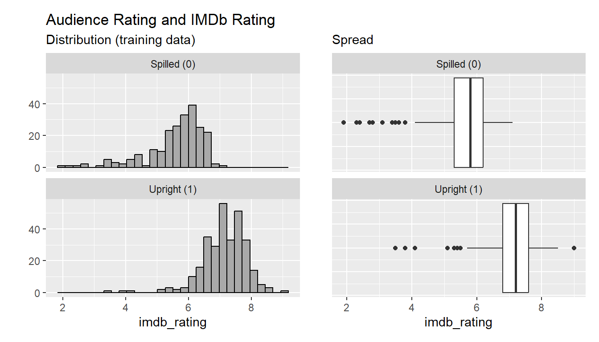
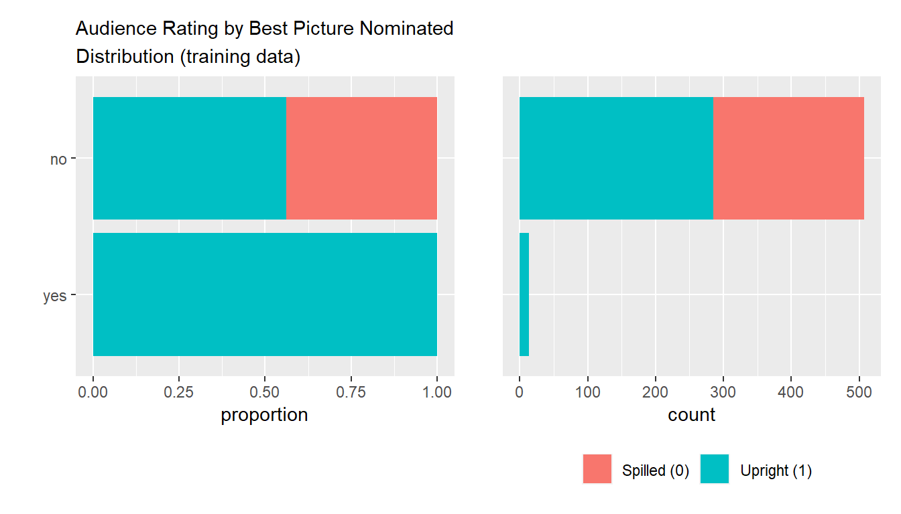

Project 3
Hartmut Schaefer
2024-05-20
LOGISTIC REGRESSION
Load packages
library(tidyverse)
library(statsr)
library(GGally) # ------------------- extension of ggplot2
library(patchwork) # ------------------- additional visualization tool
library(broom) # ------------------- Convert stat obj. into tibbles
library(caret) # ------------------- Machine learning package
library(knitr) # ------------------- support print of tables
Load cleaned dataset
Introduction
Project Instruction
This project is not a guided project and was not part of the course. The entire project was carried out by myself, from problem definition to answer. For this purpose, a multiple logistic regression model was implemented and tested in R.
In project 2 we analyzed a movie data set and answered
the question what factors make a movie popular. The variable of interest
was a continuous variable imdb_rating and we used the
multiple linear regression method to answer this
problem.
For this project we modified the question in a way that we must apply
a logistic regression model. We, therefore, selected as
the variable of interest the binary variable
audience_rating.
As part of this project, we completed exploratory data analysis
(EDA), modeling, and prediction.
1. Data
The dataset was provided by the course Data Analysis with R, Duke University hosted on Coursera. The dataset includes information from Rotten Tomatos and IMDB.
The dataset is a sample set of 651 observations with 8 variables. Below the list of all variables and their meanings. The column “important” indicates whether the variable is worthwhile to be considered in the modeling or not.
| variable_name | meaning | data_type | important |
|---|---|---|---|
| audience_rating | Categorical variable for audience rating on Rotten Tomatoes (Spilled, Upright) | factor | yes |
| imdb_rating | Rating on IMDB | num | yes |
| genre | Genre of movie (Action & Adventure, Comedy, Documentary, Drama, Horror, Mystery & Suspense, Other) | factor | yes |
| mpaa_rating | MPAA rating of the movie (G, PG, PG-13, R, Unrated) | factor | yes |
| critics_score | Critics score on Rotten Tomatoes | num | yes |
| critics_rating | Categorical variable for critics rating on Rotten Tomatoes (Certified Fresh, Fresh, Rotten) | factor | yes |
| best_pic_nom | Whether or not the movie was nominated for a best picture Oscar (no, yes) | factor | yes |
| best_pic_win | Whether or not the movie won a best picture Oscar (no, yes) | factor | yes |
Check variables
The response variable
(A.k.a output or dependent variable)
audience_rating`
## # A tibble: 2 × 2
## audience_rating n
## <fct> <int>
## 1 Spilled 275
## 2 Upright 376
The variable takes only two values “Spilled” or “Upright”.
Rotten Tomatoes rating by audience and meaning: Link
| Rating | Meaning |
|---|---|
Spilled |
< 60% of audience gave the movie a star rating of 3.5 or higher |
Upright |
> 60% of audience gave the movie a star rating of 3.5 or higher |
The predictor variables
(A.k.a explanatory or independent variables)
IMBd rating
## Min. 1st Qu. Median Mean 3rd Qu. Max.
## 1.900 5.900 6.600 6.493 7.300 9.000The Internet Movie Database (IMDb) ratings are based on the
votes of registered users. Each user can vote only once, and the votes
are then aggregated and summarized into a single rating. Link
| IMDb Rating | Meaning |
|---|---|
1/10 |
god-awful |
2/10 |
awful |
3/10 |
bad |
4/10 |
nice try, but no cigar |
5/10 |
meh |
6/10 |
not bad |
7/10 |
good |
8/10 |
very good |
9/10 |
excellent |
10/10 |
masterpiece |
genre
## # A tibble: 11 × 2
## genre n
## <fct> <int>
## 1 Action & Adventure 65
## 2 Animation 9
## 3 Art House & International 14
## 4 Comedy 87
## 5 Documentary 52
## 6 Drama 305
## 7 Horror 23
## 8 Musical & Performing Arts 12
## 9 Mystery & Suspense 59
## 10 Other 16
## 11 Science Fiction & Fantasy 9
mpaa_rating
## # A tibble: 6 × 2
## mpaa_rating n
## <fct> <int>
## 1 G 19
## 2 NC-17 2
## 3 PG 118
## 4 PG-13 133
## 5 R 329
## 6 Unrated 50Motion Picture Association (MPA) rating and meaning: Link
| Rating | Meaning |
|---|---|
G |
general audience |
NC-17 |
adults only |
PG |
parental guidance suggested |
PG-13 |
parents strongly cautioned |
R |
restricted |
Unrated |
not rated |
critics score
## Min. 1st Qu. Median Mean 3rd Qu. Max.
## 1.00 33.00 61.00 57.69 83.00 100.00
Score range: [0 - 100]
critics rating
## # A tibble: 3 × 2
## critics_rating n
## <fct> <int>
## 1 Certified Fresh 135
## 2 Fresh 209
## 3 Rotten 307Tomatometer rating by critics and meaning: Link
| Rating | Meaning |
|---|---|
Certified Fresh |
Tomatometer score > 75% and > 5 reviews from top critics, >40 reviews from critics |
Fresh |
Tomatometer score > 75% (not perfect but majority gave a thumb up) |
Rotten |
Tomatometer score < 60% (movie failed) |
best_pic_nom
## # A tibble: 2 × 2
## best_pic_nom n
## <fct> <int>
## 1 no 629
## 2 yes 22Nominated for the Academy Award as best picture.
best_pic_win
## # A tibble: 2 × 2
## best_pic_win n
## <fct> <int>
## 1 no 644
## 2 yes 7Won the Academy Award as best picture.
Scope of inference
The data were collected from 1970 to 2014. The ratings are a sample
from the audience on voluntary basis or from selected groups of movie
critics. So we can’t claim that they were collected by random sampling.
Usually, audience rating is biased towards the extremes. We therefore
cannot infer the statistics to the general population, i.e. movie
popularity for all people in the US. We can only infer the statistic on
new data collected under the same method as our sample dataset.
Data preparation
Change response variable categories to “0” and “1”
movies_select2 <- movies_select %>%
mutate(audience_rating = as.numeric(ifelse(audience_rating == "Upright", 1, 0)))
summary(movies_select2$audience_rating)## Min. 1st Qu. Median Mean 3rd Qu. Max.
## 0.0000 0.0000 1.0000 0.5776 1.0000 1.0000
Split data into training and test data
To test our model(s) we will split the dataset into two portions by stratified sampling method, utilizing the “caret-package”. One dataset for training (80%) and one for testing (20%).
set.seed(9876)
train.index <- createDataPartition(movies_select2$audience_rating, p = 0.8, list = FALSE)
train0 <- movies_select2[train.index,]
test0 <- movies_select2[-train.index,]
Insert a column for row-id to the training dataset which is required to identify outliers.
Distribution training and test dataset
sum_AR <- train0 %>%
mutate(audience_rating = as.factor(ifelse(audience_rating == 0, "Spilled (0)", "Upright (1)"))) %>%
group_by(audience_rating) %>%
summarise(n = n()) %>%
mutate(percentage = round(n/sum(n)*100,1))
sum_AR_test <- test0 %>%
mutate(audience_rating = as.factor(ifelse(audience_rating == 0, "Spilled (0)", "Upright (1)"))) %>%
group_by(audience_rating) %>%
summarise(n = n()) %>%
mutate(percentage = round(n/sum(n)*100,1))
plot1 <- train0 %>%
ggplot(aes(x = as.factor(audience_rating), fill = as.factor(audience_rating)))+
geom_bar()+
labs(title = "Distribution Audience Rating",
subtitle = "Training Data",
fill = "Audience Rating")+
ylab("Number of rated movies")+
coord_cartesian(ylim = c(1, 330))+
scale_fill_discrete(labels = c("Spilled (0)", "Upright (1)"))+
annotate("text", x=1, y=237, label=paste("n = ", sum_AR[1,2]), size = 3.5)+
annotate("text", x=2, y=315, label=paste("n = ", sum_AR[2,2]), size = 3.5)+
annotate("text", x=1, y=150, label=paste(sum_AR[1,3], "%"), size = 3.5)+
annotate("text", x=2, y=150, label=paste(sum_AR[2,3], "%"), size = 3.5)+
xlab("Audience Rating")+
theme(legend.position = "none")+
theme(plot.title = element_text(size=12))
plot2 <- test0 %>%
ggplot(aes(x = as.factor(audience_rating), fill = as.factor(audience_rating)))+
geom_bar()+
labs(title = "",
subtitle = "Test Data",
fill = "Audience Rating")+
ylab("")+
coord_cartesian(ylim = c(1, 330))+
scale_fill_discrete(labels = c("Spilled (0)", "Upright (1)"))+
annotate("text", x=1, y=67, label=paste("n = ", sum_AR_test[1,2]), size = 3.5)+
annotate("text", x=2, y=90, label=paste("n = ", sum_AR_test[2,2]), size = 3.5)+
annotate("text", x=1, y=30, label=paste(sum_AR_test[1,3], "%"), size = 3.5)+
annotate("text", x=2, y=30, label=paste(sum_AR_test[2,3], "%"), size = 3.5)+
xlab("Audience Rating")
plot1 + plot2
The training data contains 42.6% “Spilled” and 57.4% “Upright” rated
movies. The test data contains 40.8% “Spilled” and 59.2% “Upright”rated
movies. The datasets are evenly distributed in respect of response
variable audience_rating.
2. Research question
Can the binary (audience) rating be explained by factors such as genre, other rating measures (e.g, IMDb and critics ratings), or nomination and awards (e.g. Academy Award-winning films)?
What are the most influential predictors for audience rating?
Task
Build a logistic regression model to best fit the relationships between these variables optimized for a high prediction accuracy for new data.
The logistic regression model has the following linear form:
\[ \begin{aligned} log(\frac{p}{1-p}) = \beta{_0}\ + \beta{_1} x{_1} + \beta{_2} x{_2} + \beta{_3} x{_3} + . . . + \beta{_k} x{_k} \end{aligned} \]
Where:
- A success is defined if outcome
audience_rating= “Upright” or “1”.
- \(p\) is the probability of a success
- \(odd = \frac{p}{1-p}\) is the
probability of success vs the probability of failure
- \(logit(p)\) is the logit function of \(p\) equal to \(log(\frac{p}{1-p})\)
- \(\beta_i\) are the unknowns of the
model
- \(x_i\) are the independent
variables.
3. Exploratory Data Analysis (EDA)
We identified seven potential independent variables of as candidates
for the modeling .
| Variable type | Variable name | Data type |
|---|---|---|
| Dependent variable (response) | audience_rating | categorical |
| Independent variables (predictor) | imdb_rating | numerical |
| Independent variables (predictor) | critics_score | numerical |
| Independent variables (predictor) | critics_rating | categorical |
| Independent variables (predictor) | genre | categorical |
| Independent variables (predictor) | mpaa_rating | categorical |
| Independent variables (predictors) | best_pic_nom, best_pic_win | categorical |
Dependencies
audience_rating vs
imdb_rating
plot1 <- train0 %>%
mutate(audience_rating2 = ifelse(audience_rating == 0, "Spilled (0)", "Upright (1)")) %>%
ggplot(aes(x = imdb_rating)) +
geom_boxplot()+
labs(title = "",
subtitle = "Spread")+
facet_wrap(~as.factor(audience_rating2), nrow = 2)+
theme(axis.text.y=element_blank(), axis.ticks.y=element_blank())+
ylab("")
plot2 <- train0 %>%
mutate(audience_rating2 = ifelse(audience_rating == 0, "Spilled (0)", "Upright (1)")) %>%
ggplot(aes(x = imdb_rating))+
geom_histogram(fill = "darkgrey", color = "black")+
labs(title = "Audience Rating and IMDb Rating",
subtitle = "Distribution (training data)")+
facet_wrap(~as.factor(audience_rating2), nrow = 2)+
ylab("")
plot2 + plot1
imdb_rating distributions are both moderate left-skewed.
Central tendency (mean, median) are distinct between
audience_rating “Spilled (0)” and “Upright (1)”.
i.e. movies with lower IMDb ratings are more likely to be rated as
“Spilled” and higher IMDd ratings are more likely to be rated as
“Upright”.
audience_rating vs
genre
plot1 <- train0 %>%
ggplot(aes(x = fct_rev(genre))) +
geom_bar(position = "fill", aes(fill = as.factor(audience_rating)))+
labs(title = "Audience Rating by Genre",
subtitle = "Distribution (training data)",
fill = "Audience Rating")+
scale_fill_discrete(labels = c("Spilled (0)", "Upright (1)"))+
xlab("")+
ylab("proportion")+
theme(legend.position = "none")+
coord_flip()
plot2 <- train0 %>%
ggplot(aes(x = fct_rev(genre))) +
geom_bar(aes(fill = as.factor(audience_rating)))+
labs(fill = "")+
scale_fill_discrete(labels = c("Spilled (0)", "Upright (1)"))+
xlab("")+
ylab("count")+
theme(axis.text.y=element_blank(), axis.ticks.y=element_blank())+
theme(legend.position = "bottom")+
coord_flip()
plot1 + plot2
The proportions of audience rating seem to be dependent on type of
genre.
audience_rating vs
mpaa_rating
plot1 <- train0 %>%
ggplot(aes(x = fct_rev(mpaa_rating))) +
geom_bar(position = "fill", aes(fill = as.factor(audience_rating)))+
labs(title = "Audience Rating by Mpaa Rating",
subtitle = "Distribution (training data)",
fill = "Audience Rating")+
scale_fill_discrete(labels = c("Spilled (0)", "Upright (1)"))+
xlab("")+
ylab("proportion")+
theme(legend.position = "none")+
coord_flip()
plot2 <- train0 %>%
ggplot(aes(x = fct_rev(genre))) +
geom_bar(aes(fill = as.factor(audience_rating)))+
labs(fill = "")+
scale_fill_discrete(labels = c("Spilled (0)", "Upright (1)"))+
xlab("")+
ylab("count")+
theme(axis.text.y=element_blank(), axis.ticks.y=element_blank())+
theme(legend.position = "bottom")+
coord_flip()
plot1 + plot2
The proportions of audience rating is relatively even distributed per
mpaa classes.
audience_rating vs
critics_score
plot1 <- train0 %>%
mutate(audience_rating2 = ifelse(audience_rating == 0, "Spilled (0)", "Upright (1)")) %>%
ggplot(aes(x = critics_score)) +
geom_boxplot()+
labs(title = "",
subtitle = "Spread")+
facet_wrap(~as.factor(audience_rating2), nrow = 2)+
theme(axis.text.y=element_blank(), axis.ticks.y=element_blank())+
ylab("")
plot2 <- train0 %>%
mutate(audience_rating2 = ifelse(audience_rating == 0, "Spilled (0)", "Upright (1)")) %>%
ggplot(aes(x = critics_score))+
geom_histogram(fill = "darkgrey", color = "black")+
labs(title = "Audience Rating and Critics Score",
subtitle = "Distribution (training data)")+
facet_wrap(~as.factor(audience_rating2), nrow = 2)+
ylab("")
plot2 + plot1
Distribution and central tendency (mean, median) are distinct between
audience_rating “Spilled (0)” and “Upright (1)”.
i.e. movies with lower Critics Scores are more likely to be rated as
“Spilled” and with higher Critics Scores are more likely to be rated as
“Upright”. However, Critics Score appears to be correlated with IMDb
Rating and Critics Rating and needs to be investigated.
audience_rating vs
critics_rating
plot1 <- train0 %>%
ggplot(aes(x = fct_rev(critics_rating))) +
geom_bar(position = "fill", aes(fill = as.factor(audience_rating)))+
labs(title = "Audience Rating by Critics Rating",
subtitle = "Distribution (training data)",
fill = "Audience Rating")+
scale_fill_discrete(labels = c("Spilled (0)", "Upright (1)"))+
xlab("")+
ylab("proportion")+
theme(legend.position = "none")+
coord_flip()
plot2 <- train0 %>%
ggplot(aes(x = fct_rev(critics_rating))) +
geom_bar(aes(fill = as.factor(audience_rating)))+
labs(fill = "")+
scale_fill_discrete(labels = c("Spilled (0)", "Upright (1)"))+
xlab("")+
ylab("count")+
theme(axis.text.y=element_blank(), axis.ticks.y=element_blank())+
theme(legend.position = "bottom")+
coord_flip()
plot1 + plot2
The proportions of audience ratings are closely related to the critics
ratings.
audience_rating vs
best_pic_nom
plot1 <- train0 %>%
ggplot(aes(x = fct_rev(best_pic_nom))) +
geom_bar(position = "fill", aes(fill = as.factor(audience_rating)))+
labs(title = "Audience Rating by Best Picture Nominated",
subtitle = "Distribution (training data)",
fill = "Audience Rating")+
scale_fill_discrete(labels = c("Spilled (0)", "Upright (1)"))+
xlab("")+
ylab("proportion")+
theme(legend.position = "none")+
theme(plot.title = element_text(size=11))+
coord_flip()
plot2 <- train0 %>%
ggplot(aes(x = fct_rev(best_pic_nom))) +
geom_bar(aes(fill = as.factor(audience_rating)))+
labs(fill = "")+
scale_fill_discrete(labels = c("Spilled (0)", "Upright (1)"))+
xlab("")+
ylab("count")+
theme(axis.text.y=element_blank(), axis.ticks.y=element_blank())+
theme(legend.position = "bottom")+
coord_flip()
plot1 + plot2
Award nominated movies for best pictures are all rated “Upright” by the
audience. But its influence on the outcome is very weak due to the small
number of nominated pictures.
audience_rating vs
best_pic_win
plot1 <- train0 %>%
ggplot(aes(x = fct_rev(best_pic_win))) +
geom_bar(position = "fill", aes(fill = as.factor(audience_rating)))+
labs(title = "Audience Rating by Best Picture Win",
subtitle = "Distribution (training data)",
fill = "Audience Rating")+
scale_fill_discrete(labels = c("Spilled (0)", "Upright (1)"))+
xlab("")+
ylab("proportion")+
theme(legend.position = "none")+
theme(plot.title = element_text(size=11))+
coord_flip()
plot2 <- train0 %>%
ggplot(aes(x = fct_rev(best_pic_win))) +
geom_bar(aes(fill = as.factor(audience_rating)))+
labs(fill = "")+
scale_fill_discrete(labels = c("Spilled (0)", "Upright (1)"))+
xlab("")+
ylab("count")+
theme(axis.text.y=element_blank(), axis.ticks.y=element_blank())+
theme(legend.position = "bottom")+
coord_flip()
plot1 + plot2
Award winning movies for best picture are all rated “Upright” by the
audience. But its influence on the outcome is extremely weak due to the
small number.
Summary relationships between dependent and independent
variables
We visually inspected the relationships of each independent variable
with the dependent variable. Most of the variables are reasonable to be
included in the model. However, variables best_pic_nom and
best_pic_win are only a weak predictor due to their small
number of nominated and awarded pictures. Variable
critics_score seems to be correlated with other
predictors.
Assumptions
In order to apply logistic regression the variables have to meet the
following assumptions:
- Dependent variable is binary (1 or 0)
- The data are independent. I.e not paired, not depending on order of selection.
- The independent variables should not correlate too strongly with each other (collinearity assumption)
- The independent numerical variables are linearly correlated to the log odds of the dependent variable
- There should be no outliers
Assumption 1: Dependent variable is binary
##
## 0 1
## 222 299There are only values “0” and “1” in the response variables.
OK.
Assumption 2: Data are independent, i.e. randomly collected and not paired.
The data were randomly collected as discussed above in Part 1.
OK.
Assumption 4: Linearity between log(odds) and continuous independent variable
The dataset contains only one continuous numerical variable
imdb_rating. We will first plot
audience_rating against imdb_rating and add a
logit regression line to see its natural relationship.
train3 %>%
ggplot(aes(y = audience_rating, x = imdb_rating))+
geom_jitter(height = 0.05, alpha = 0.2, size = 3)+
geom_smooth(method = "glm",
method.args = list(family = "binomial"), se = FALSE, color = "blue")+
labs(title = "Logistic regression",
subtitle = "Audience rating vs. IMDb rating")+
xlab("imdb_rating (continuous)")+
ylab("audience_rating (binary)")+
theme(plot.title.position = "plot",
axis.title.y = element_text(hjust=1),
axis.title.x = element_text(hjust=0))
There is a clear distinction between
audience_rating:Spilled = 0 and
audience_rating:Upright = 1. Furthermore, there is some
overlapping range imdb_rating 5 - 7. On the upper left side
there are three points which may be possible outliers.
Split data points into buckets and plot logit(p)
against imdb_rating
References: Link
1, Link
2
For the linearity check we split the data by imdb_rating
in 3 groups by 33.3% percentile. Then, for each group we will calculate
its mid-points:
| Parameter | description or formula |
|---|---|
| p_mean | mean (observed audience_rating) for each group |
| logit | log(p_mean/(1-p_mean)) |
| x_median | median (imdb_rating) for each group |
Split predicted probability into 10 groups by quantiles of 10%
#### Testing linearity of imdb_rating (num variable) vs. observed response
# create quantiles by steps of 1/3 along independent variable to be tested
# summary(train3$imdb_rating)
quan <- as_tibble(quantile(train3$imdb_rating, probs=seq(0,1, by=1/3)))
q0 <- as.numeric(quan[1,1])
q1 <- as.numeric(quan[2,1])
q2 <- as.numeric(quan[3,1])
q3 <- as.numeric(quan[4,1])
train4 <- train3 %>%
mutate(group = case_when(
imdb_rating < q1 ~ 1,
imdb_rating >= q1 & imdb_rating < q2 ~ 2,
imdb_rating >= q2 ~ 3)
)
Calculate the mid-point for the observed probability and imdb_rating in each bucket.
probs1 <- train4 %>%
group_by(group) %>%
summarise(n = n(),
p_mean = mean(audience_rating),
odds = p_mean/(1-p_mean),
logit = log(p_mean/(1-p_mean)),
x_median = median(imdb_rating))
probs1## # A tibble: 3 × 6
## group n p_mean odds logit x_median
## <dbl> <int> <dbl> <dbl> <dbl> <dbl>
## 1 1 172 0.0872 0.0955 -2.35 5.6
## 2 2 172 0.628 1.69 0.523 6.55
## 3 3 177 0.994 176. 5.17 7.5
Plot logit(p) against x_median
ggplot()+
geom_point(data = probs1, aes(x = x_median, y = logit),
size = 5, color = "darkgrey", alpha = 0.9)+
geom_smooth(data = probs1, aes(x = x_median, y = logit), method = "lm", se = F)+
labs(title = "Linearity check: observed logit(p) as function of imdb_rating",
subtitle = "Data grouped into 3 buckets")+
xlab("imdb_rating")+
ylab("Logit (observed probability)")+
theme(plot.title.position = "plot",
axis.title.y = element_text(hjust=1),
axis.title.x = element_text(hjust=0))
Relationship between imdb_rating and the observed
logit(p) is approximately linear. The assumption is met.
Remark: When grouping the x-variable into smaller groups (e.g. 4 or more) for some buckets logit(p) may become infinite or returns an Error. This is the case when a single bucket contains only “1” or “0” values. An average p = 1 will return logit(p) = Infinite, and an average p = 0 will return logit(p) = Error. To avoid this we have to choose a sufficient large bucket that returns an average p larger than “0” and smaller than “1”.
Assumption 5: No outliers
To identify outliers and influential points we will look into the
Cook distance plot of the model. For the calculation of the Cook
distances we built a simple model with the continuous variable
imdb_rating.
# Build logistic model with one variable
model <- glm(audience_rating ~ imdb_rating,
data = train3,
family = "binomial")
summary(model)##
## Call:
## glm(formula = audience_rating ~ imdb_rating, family = "binomial",
## data = train3)
##
## Coefficients:
## Estimate Std. Error z value Pr(>|z|)
## (Intercept) -20.0752 1.8060 -11.12 <2e-16 ***
## imdb_rating 3.1546 0.2804 11.25 <2e-16 ***
## ---
## Signif. codes: 0 '***' 0.001 '**' 0.01 '*' 0.05 '.' 0.1 ' ' 1
##
## (Dispersion parameter for binomial family taken to be 1)
##
## Null deviance: 710.84 on 520 degrees of freedom
## Residual deviance: 343.97 on 519 degrees of freedom
## AIC: 347.97
##
## Number of Fisher Scoring iterations: 6
There are three points with high residuals: Point 100, 204 and 175. Lets
look into these three points.
## # A tibble: 3 × 8
## ID audience_rating imdb_rating genre mpaa_rating critics_rating
## <int> <dbl> <dbl> <fct> <fct> <fct>
## 1 100 1 3.5 Comedy R Rotten
## 2 175 1 4.1 Drama PG-13 Rotten
## 3 204 1 3.8 Comedy R Rotten
## # ℹ 2 more variables: best_pic_nom <fct>, best_pic_win <fct>
All three points have a high audience rating but low imdb_rating and low
critics_rating. Lets find out how many more points with similar values
are in the dataset.
# Check for more outliers in the dataset
train3 %>%
filter(audience_rating==1 &
imdb_rating <= 4.5 &
critics_rating == "Rotten" &
!(ID %in% c(100,175,204))) %>%
summarise(n = n())## # A tibble: 1 × 1
## n
## <int>
## 1 0
There are no other points with a similar characteristics. These three
points are exceptional and can be removed from the training dataset.
Verify the model with the cleaned dataset.
# Build model with cleaned dataset
model <- glm(audience_rating ~ imdb_rating,
data = train5,
family = "binomial")
summary(model)##
## Call:
## glm(formula = audience_rating ~ imdb_rating, family = "binomial",
## data = train5)
##
## Coefficients:
## Estimate Std. Error z value Pr(>|z|)
## (Intercept) -25.2766 2.3502 -10.76 <2e-16 ***
## imdb_rating 3.9550 0.3652 10.83 <2e-16 ***
## ---
## Signif. codes: 0 '***' 0.001 '**' 0.01 '*' 0.05 '.' 0.1 ' ' 1
##
## (Dispersion parameter for binomial family taken to be 1)
##
## Null deviance: 707.49 on 517 degrees of freedom
## Residual deviance: 289.52 on 516 degrees of freedom
## AIC: 293.52
##
## Number of Fisher Scoring iterations: 7
The AIC (Akaike Information Criterion) has improved from 347.97 to 293.52. In the plots we see some new extreme values with residuals (7-15), but they are by a magnitude smaller than residuals of the removed outliers. The condition for outliers is met. We are now ready for the final modeling.
4. Modeling
Model building
Prepare the dataframe
Model selection using a function from package MASS::stepAIC()
As measure for model selection the function uses the AIC (Akaike Information Criterion) criteria. The lower the AIC value the better the model fit.
Build a full model and a null model:
# Build a full model
m_full <- glm(audience_rating ~ .,
data = train_model, family = "binomial")
# summary(m_full)
# Build a null model
m_null <- glm(audience_rating ~ 1, data = train_model, family = "binomial")
# summary(m_null)
Forward selection approach with AIC criteria:
# Forward selection approach
library(MASS)
model <- stepAIC(m_null, direction = "forward", scope = list(upper = m_full,
lower = m_null),
trace = 0)
summary(model)##
## Call:
## glm(formula = audience_rating ~ imdb_rating + critics_rating,
## family = "binomial", data = train_model)
##
## Coefficients:
## Estimate Std. Error z value Pr(>|z|)
## (Intercept) -22.9652 2.6380 -8.706 <2e-16 ***
## imdb_rating 3.8268 0.3934 9.727 <2e-16 ***
## critics_ratingFresh -1.7296 0.6747 -2.563 0.0104 *
## critics_ratingRotten -1.5618 0.6672 -2.341 0.0193 *
## ---
## Signif. codes: 0 '***' 0.001 '**' 0.01 '*' 0.05 '.' 0.1 ' ' 1
##
## (Dispersion parameter for binomial family taken to be 1)
##
## Null deviance: 707.49 on 517 degrees of freedom
## Residual deviance: 280.96 on 514 degrees of freedom
## AIC: 288.96
##
## Number of Fisher Scoring iterations: 7
The best model selected by the algorithm has 1 numerical variable and
1 categorical variable, with to levels. In total 3 variables. All
variables are statistically significant.
Model diagnostics
As next step we will check how well the model fits the training data.
Fitting accuracy
In order to assess the quality of the model, we could ask: if we look at audience rating that we modeled as having a 10% chance of being rated “Upright (1)”, do we find 10% of them actually being rated as “Upright (1). We can do this by plotting the predicted outcome against the actual true outcome.
Since the response variable has only binary numbers {0,1} we must convert them into continuous probability values. We can do this by grouping them into buckets (e.g. 10%) and averaging.
For each bucket we will calculate the mid-point for the predicted probability and the observed probability and the confidence intervals. We will then plot the predicted probabilities against the observed probabilities with confidence intervals.
# Append fitted values from prediction to the dataset
train_model1 <- train_model %>%
mutate(fitted = model_final$fitted.values)
Split predicted probability into 10 groups by quantiles of 10%.
# create quantiles by steps of 0.1
quan <- as_tibble(quantile(train_model1$fitted, probs=seq(0,1, by=0.1)))
q0 <- as.numeric(quan[1,1])
q1 <- as.numeric(quan[2,1])
q2 <- as.numeric(quan[3,1])
q3 <- as.numeric(quan[4,1])
q4 <- as.numeric(quan[5,1])
q5 <- as.numeric(quan[6,1])
q6 <- as.numeric(quan[7,1])
q7 <- as.numeric(quan[8,1])
q8 <- as.numeric(quan[9,1])
q9 <- as.numeric(quan[10,1])
q10 <- as.numeric(quan[11,1])
# Bucket the data into groups according to their predicted probabilities
train_model2 <- train_model1 %>%
mutate(group = case_when(
fitted < q1 ~ 1,
fitted >= q1 & fitted < q2 ~ 2,
fitted >= q2 & fitted < q3 ~ 3,
fitted >= q3 & fitted < q4 ~ 4,
fitted >= q4 & fitted < q5 ~ 5,
fitted >= q5 & fitted < q6 ~ 6,
fitted >= q6 & fitted < q7 ~ 7,
fitted >= q7 & fitted < q8 ~ 8,
fitted >= q8 & fitted < q9 ~ 9,
fitted >= q9 ~ 10)
)Calculate the mid-points and confidence interval for each bucket
# Critical z-value for CI=95%
z = qnorm(0.975)
# create dataframe for buckets with mid points and CI
probs2 <- train_model2 %>%
group_by(group) %>%
summarise(n = n(),
p = mean(audience_rating),
se_p = sqrt((p * (1-p))/n), #SE for binomial distributed values
lwr = p - z * se_p,
upr = p + z * se_p,
x_median = median(fitted))
Plot the predicted probability against the true observed probability with mid-points and confidence intervals
# Plot true response vs fitted values
ggplot() +
geom_jitter(data = train_model2, aes(y = audience_rating, x = fitted),
height = 0.03, alpha = 0.5, size = 2, color = "darkgrey")+
geom_abline(data = probs2, aes(x = x_median),
slope = 1, color = "red", size = 0.5, linetype = 6 )+
geom_pointrange(data = probs2, aes(x = x_median, y = p, ymin = lwr, ymax = upr), size = 0.7, alpha = 0.5)+
labs(title = "True values vs predicted values - Training Data",
subtitle = "Observed values with 95% confidence interval (for 10 buckets)")+
xlab("Predicted Probability")+
ylab("Observed Probability (Truth)")+
theme(plot.title.position = "plot",
axis.title.y = element_text(hjust=1),
axis.title.x = element_text(hjust=0))
The points plotted should fall close to the line y = x, since the
predicted probabilities should be similar to the observed probabilities.
We can use the confidence intervals from the observed probabilities to
judge whether anything might be out of line.
The dashed line is within the confidence bound of 95% confidence
intervals for most of the buckets. We can therefore conclude that the
logistic fit of the final model is reasonable.
The final model
In the previous chapter we identified the best fitted model with 1
numerical predictor and 1 categorical predictors
(critics_rating with 2 levels), in total 3 predictors:
\[
\begin{aligned}
\widehat{logit(p)} = \hat{\beta_0} + \hat{\beta_1} \times
(imdb\_rating) + \hat{\beta_2} \times (critics\_ratingFresh) +
\hat{\beta_2} \times (critics\_ratingRotten)
\end{aligned}
\]
Where \(\beta_i\) are the estimates listed below:
| term | estimate | std.error | statistic | p.value |
|---|---|---|---|---|
| (Intercept) | -22.965178 | 2.6379652 | -8.705641 | 0.0000000 |
| imdb_rating | 3.826755 | 0.3934266 | 9.726732 | 0.0000000 |
| critics_ratingFresh | -1.729583 | 0.6747076 | -2.563456 | 0.0103636 |
| critics_ratingRotten | -1.561766 | 0.6672351 | -2.340653 | 0.0192501 |
The categorical variable critics_rating has the following
levels:
Certified Fresh: Reference levelFresh: estimate \(\hat{\beta_2} = -1.729583\)Rotten: estimate \(\hat{\beta_3} = -1.561766\)
Model interpretation
References:
The model coefficients explain the change in the logit output per
unit of change in \(x_i\), all others
hold constant.
Since logit values are not intuitive understandable it is better to
explain the coefficient as “odds ratio (OR)”, i.e. effect of change in
odds. The odds ratios can be expressed by the exponent of the
coefficient, \(OR =
\exp(\hat{\beta_i})\).
# Calculate the ODDs ratios
options(scipen=0)
df_model <- tidy(model_final) %>%
filter(!term == "(Intercept)") %>%
mutate(odds_ratio = round(exp(estimate),3),
significant = case_when(p.value < 0.05 ~ TRUE,
p.value >= 0.05 ~ FALSE)) %>%
select(term, estimate, odds_ratio, significant)
kable(df_model[1:3,])| term | estimate | odds_ratio | significant |
|---|---|---|---|
| imdb_rating | 3.826755 | 45.913 | TRUE |
| critics_ratingFresh | -1.729583 | 0.177 | TRUE |
| critics_ratingRotten | -1.561766 | 0.210 | TRUE |
Interpretation
Reference: Logit Regression in
R: Odds ratio interpretation
- For a one-unit increase of IMDb-rating, the odds of audience rating
“Upright” increases by a factor of 45.9.
critics_rating:Freshodds of being rated “Upright” by the audience are smaller by a factor of 0.18 thancritics_rating:Certified-Freshodds of being rated “Upright”.
critics_rating:Rottenodds of being rated “Upright” by the audience are smaller by a factor of 0.21 thancritics_rating:Certified-Freshodds of being rated “Upright”.
Answer the research questions
1. Can the binary (audience) rating be explained by attributes
such as genre, other rating measures (e.g, IMDb and critics ratings),
and nomination and awards (e.g. Academy Award-winning
films)?
The binary variable audience_rating can be well
explained by attributes imdb_rating and
critics_rating. The variables are statistically
significant.
2. What is the most influential predictor for audience
rating?
The overall most influential predictor for
audience_rating is imdb_rating, i.e. low
imdb_rating results in
audience_rating: Spilled and high imdb_rating
results in audience_rating: Upright.
Limitations
The model describes only existing relationships between independent
variables and Audience Rating. We cannot draw causation from these
findings. Furthermore, we cannot use the model to make predictions for
movie ratings that are outside of the time frame (1970 -2014). We also
cannot infer the model to the popularity of movies in the general
public, but only to data that are collected with the same variables and
measures.
Summary Modeling
The best model was selected by a step-by-step forward selection
approach using the AIC measure. The most influential variables are
imdb_rating and critics_rating. The
assumptions for the logistic regression modeling were met.
Overall, the logistic model is a reasonable estimate for
audience_rating based on the given dataset.
5. Prediction
To assess the performance accuracy of the model we will run a
prediction with a training and test dataset and calculate some
classification measures. We will then compare the model performance of
the test dataset with the training dataset.
Metrics of classification performance
Reference: Understanding
Classification Modeling, C. Thieme, Medium
A logistic regression will return predicted probabilities of the event occurrence. The predicted probability can then be used to divide them into two classes (0, 1). A threshold value, yet to be determined, is used as a criterion for the classification. If the outcome values are balanced the threshold value is usually set to 0.5. In this respect we can treat the logistic model as a classification problem.
To evaluate a classification model a decision matrix from the outcome
is commonly used. From the decision matrix the metrics
accuracy, error rate, precision,
sensitivity and specificity can be
calculated.
The decision matrix (a.k.a. confusion matrix):

- TP : True Positive (prediction = 1 and observation = 1)
- TN : True Negative (prediction = 0 and observation = 0)
- FP : False Positive (prediction = 1 but observation = 0)
- FN : False Negative (prediction = 0 but observation = 1)
Metrics
Accuracy, most intuitive, but problematic for imbalanced
classes in response (e.g. 1 out of 1000)
- accuracy = (TP + TN) / (TP + FP + TN + FN)
Error Rate: Opposite of accuracy. Shows how often
the outcomes are being misclassified.
- error rate = (FP + FN) / (TP + FP + TN + FN)
Precision: Ratio of true positive to the predicted
positives. Used when the cost for false positive is high (e.g. spam mail
classification).
- precision = TP / (TP + FP)
Sensitivity: Concerned about positive outcomes, and when the
cost of false positive is low (e.g. cancer diagnosis)
- sensitivity = TP / (TP + FN)
Specificity: Concerned about negative outcomes and a high
cost to a positive outcome.
- specificity = TN / (TN + FP)
For our purpose we will only investigate the accuracy
metric, since the classes are distributed evenly (about 50% “Upright and
50%”Spilled”).
Setting the threshold value for classification
Recalling from Part2, the distribution of the observed
audience_rate 43% for “0” and 57% for “1”. The distribution
is reasonable balanced to set the threshold value to 0.5.
Note: Optimization of the threshold value is part of machine learning and beyond this project. An example for threshold optimization can be found here.
Training dataset
# Run prediction on training data
pred <- predict(model_final, train_model, type = "response")
pred <- data.frame(pred)# Add prediction column to training dataset
train_model3 <- train_model %>%
mutate(pred = pred$pred,
class = ifelse(pred < cutoff, 0, 1))
Decision matrix for training data
# Decision Matrix - Confusion Matrix
table(predicted = train_model3$class, observed = train_model3$audience_rating)## observed
## predicted 0 1
## 0 195 34
## 1 27 262conf_matrix <- data.frame(table(predicted = train_model3$class,
observed = train_model3$audience_rating))
Classification metrics for training data
# Initialize empty df: class_metrics for comparison
metrics <- c("accuracy", "error", "precision", "sensitivity", "specificity")
train_data <- c(0,0,0,0,0)
test_data <- c(0,0,0,0,0)
class_metrics <- data.frame(metrics, train_data, test_data)
# Extract TP, TN, FP, FN
TP <- conf_matrix %>%
filter(predicted == 1 & observed == 1)
TP <- TP$Freq
TN <- conf_matrix %>%
filter(predicted == 0 & observed == 0)
TN <- TN$Freq
FP <- conf_matrix %>%
filter(predicted == 1 & observed == 0)
FP <- FP$Freq
FN <- conf_matrix %>%
filter(predicted == 0 & observed == 1)
FN <- FN$Freq
total <- TP + TN + FP + FN
# Calculate metrics
accuracy <- (TP + TN) / total # ------------------------------ Accuracy rate
error <- 1 - accuracy # ----------------------------------------- Error rate
precision <- TP / (TP + FP) # --------------------------------- Precision rate
sensitivity <- TP / (TP + FN) # ----------------------------- Sensitivity rate
specificity <- TN / (TN + FP) # ----------------------------- Specificity rate
# Save in class_metrics df
class_metrics[1,2] <- round(accuracy, 4)
class_metrics[2,2] <- round(error, 4)
class_metrics[3,2] <- round(precision, 4)
class_metrics[4,2] <- round(sensitivity,4)
class_metrics[5,2] <- round(specificity,4)
## metrics train_data
## 1 accuracy 0.8822
## 2 error 0.1178
## 3 precision 0.9066
## 4 sensitivity 0.8851
## 5 specificity 0.8784
Accuracy: The classification for
audience_rating is 88.2% accurate in all cases using the
training data.
Precision: The classification of
audience_rating: Upright is 90.7% correct compared to the
total “Upright” predicted cases using the training data. i.e. the number
of misclassification of “Upright” in audience rating is 11.8%.
Test dataset
Fitting accuracy of model to test data
To assess the quality of the model fit for the testing data we will plot the bucketed predicted probabilities against the bucketed observed probabilities with confidence intervals. Again, we split the data into 10 buckets by quantiles of 10%.
# TEST DATA: create quantiles by steps of 0.1
#summary(test$pred)
quan <- as_tibble(quantile(test1$pred, probs=seq(0,1, by=0.1)))
q0 <- as.numeric(quan[1,1])
q1 <- as.numeric(quan[2,1])
q2 <- as.numeric(quan[3,1])
q3 <- as.numeric(quan[4,1])
q4 <- as.numeric(quan[5,1])
q5 <- as.numeric(quan[6,1])
q6 <- as.numeric(quan[7,1])
q7 <- as.numeric(quan[8,1])
q8 <- as.numeric(quan[9,1])
q9 <- as.numeric(quan[10,1])
q10 <- as.numeric(quan[11,1])
test2 <- test1 %>%
mutate(group = case_when(
pred < q1 ~ 1,
pred >= q1 & pred < q2 ~ 2,
pred >= q2 & pred < q3 ~ 3,
pred >= q3 & pred < q4 ~ 4,
pred >= q4 & pred < q5 ~ 5,
pred >= q5 & pred < q6 ~ 6,
pred >= q6 & pred < q7 ~ 7,
pred >= q7 & pred < q8 ~ 8,
pred >= q8 & pred < q9 ~ 9,
pred >= q9 ~ 10)
)
# TEST DATA : Critical z-value for CI=95%
z = qnorm(0.975)
# create dataframe for buckets with mid points and CI
probs3 <- test2 %>%
group_by(group) %>%
summarise(n = n(),
p = mean(audience_rating),
se_p = sqrt((p * (1-p))/n), #SE for binomial distributed values
moe = z * se_p,
lwr = p - z * se_p,
upr = p + z * se_p,
x_median = median(pred))
# TEST DATA: Plot true response vs fitted values
ggplot() +
geom_jitter(data = test1, aes(y = audience_rating, x = pred),
height = 0.03, alpha = 0.7, size = 2, color = "darkgrey")+
geom_abline(data = probs3, aes(x = x_median),
slope = 1, color = "red", size = 0.5, linetype = 6 )+
geom_pointrange(data = probs3, aes(x = x_median, y = p, ymin = lwr, ymax = upr), size = 0.7, alpha = 0.5)+
labs(title = "True values vs predicted values - Test Data",
subtitle = "Observed values with 95% confidence interval (for 10 buckets)")+
xlab("Predicted Probability")+
ylab("Observed Probability (Truth)")+
theme(plot.title.position = "plot",
axis.title.y = element_text(hjust=1),
axis.title.x = element_text(hjust=0))
The dashed line is within the confidence bound of 95% confidence
intervals for most of the buckets. The three data points in the right
upper corner with confidence interval 0 are not located directly on the
diagonal line but are very close to it. In other words, looking at the
graph we are 95% confident that more than 70% of the data points are
expressed correctly by the model. We can therefore conclude that the
logistic fit for the test data is reasonable.
Decision matrix for test data
# Decision Matrix - Confusion Matrix
table(predicted = test1$class, observed = test1$audience_rating)## observed
## predicted 0 1
## 0 44 9
## 1 9 68
Classification metrics for test data
# TEST DATA: Extract TP, TN, FP, FN
TP <- conf_matrix %>%
filter(predicted == 1 & observed == 1)
TP <- TP$Freq
TN <- conf_matrix %>%
filter(predicted == 0 & observed == 0)
TN <- TN$Freq
FP <- conf_matrix %>%
filter(predicted == 1 & observed == 0)
FP <- FP$Freq
FN <- conf_matrix %>%
filter(predicted == 0 & observed == 1)
FN <- FN$Freq
total <- TP + TN + FP + FN
# Calculate metrics
accuracy <- (TP + TN) / total # ------------------------------ Accuracy rate
error <- 1 - accuracy # ----------------------------------------- Error rate
precision <- TP / (TP + FP) # --------------------------------- Precision rate
sensitivity <- TP / (TP + FN) # ----------------------------- Sensitivity rate
specificity <- TN / (TN + FP) # ----------------------------- Specificity rate
# Save in class_metrics df
class_metrics[1,3] <- round(accuracy, 4)
class_metrics[2,3] <- round(error, 4)
class_metrics[3,3] <- round(precision, 4)
class_metrics[4,3] <- round(sensitivity,4)
class_metrics[5,3] <- round(specificity,4)
The classification metrics for test and training data are as
follows:
class_metrics <- class_metrics %>%
mutate(change = ifelse(metrics != "error", round((train_data-test_data)/train_data,3), "---" )
)
kable(class_metrics)| metrics | train_data | test_data | change |
|---|---|---|---|
| accuracy | 0.8822 | 0.8615 | 0.023 |
| error | 0.1178 | 0.1385 | — |
| precision | 0.9066 | 0.8831 | 0.026 |
| sensitivity | 0.8851 | 0.8831 | 0.002 |
| specificity | 0.8784 | 0.8302 | 0.055 |
The classification performance for the test dataset are in line with the the performance for the training dataset. We don’t see any large decline in performance in the test dataset due to overfitting or underfitting.
Accuracy: The prediction for audience_rating is
86.1% accurate for all cases using the test data. This is a 2.3%
reduction in accuracy than for the training dataset as expected.
Precision: The prediction of
audience_rating: Upright is 88.3% correct compared to the
total “Upright” predicted cases using the test data. This is a 2.6%
reduction in precision than for the training dataset as expected.
Summary prediction
- The classification performance for the test dataset are in line with the the performance for the training dataset
- The classification accuracy for the correct
audience_ratingis 86.1%. - The classification precision for the correct
audience_rating: Uprightis 88.3%. - The overall accuracy score of the model for the classification from
the test data is “good”.